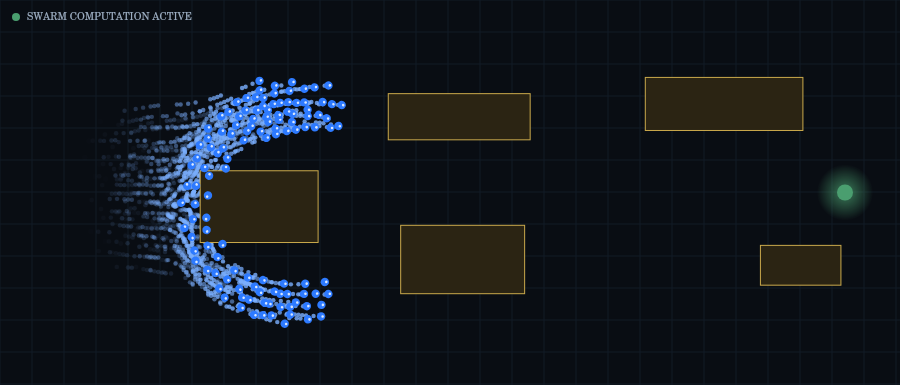
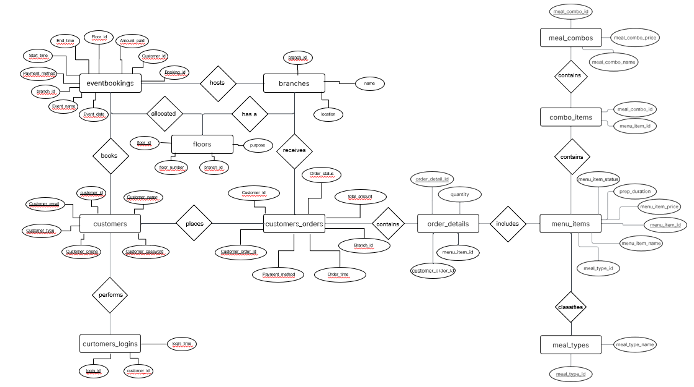

Selected work.
Legal Copilot BD
“Employer can end the job after one week notice.”
The test supplies this paraphrase for a clause that says “seven days notice.”
quote_not_foundEvidence matching
React / FastAPI / Python
A contract reviewer for Bangladesh. Each suggested risk carries a clause ID and a quotation. The validator checks the quotation against the uploaded text and can repair a misplaced clause ID when the match is unique.
View source ↗Swarm Lab

Paths through a swarm
JavaScript / Canvas 2D
A sandbox for watching small agents find a target. In ant colony mode, bots follow fading pheromone trails. Switch to A* and their next step comes from a grid search around obstacles.
View source ↗RUSH
if_stmt:\n IF '(' condition ')'\n PRINT INT ELSE PRINT INTExample input
if (5 > 2) print 10 else print 20;A small language in C
Flex / Bison / C
The scanner recognises numbers, operators and keywords. The parser evaluates arithmetic and simple integer branches. In the grammar shown here, the two print values come from opposite sides of an if-else statement.
View source ↗Green Garden


Green Garden ER diagram
SQL / Relational modelling
A database for the Green Garden canteen at Daffodil International University. Order details connect each order to its menu items. Event bookings follow a separate path through branches and floors.
View source ↗